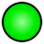
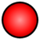

De: La Frikipedia, la enciclopedia extremadamente seria.
De: La Frikipedia, la enciclopedia extremadamente seria. De: La Frikipedia, la enciclopedia extremadamente seria.
"LOS FRIKIOSCARES"
Descubre el placer de caminar por la alfombra roja y sentir la admiración del público presente.
Presenta tu mejor obra y tendrás la posibilidad de alzarte con la preciada estatuilla.
Si has escrito un artículo en el transcurso de 2011 preséntaselo a la Academia para que lo evalúe. Si lo hallan apto, pasará por un proceso de selección que pondrá a las 5 mejores obras de cada categoría a disposición del público, para que sea el pueblo el que decida quién merece la estatuilla. Si fuiste el más votado en tu categoría, ¡enhorabuena!, te llevas el Frikioscar al mejor artículo.
Cualquier usuario registrado puede participar. El único requisito es que hayas escrito un artículo y lo presentes a la Academia dentro de los plazos de duración del concurso.
No es necesario que te apuntes. Si presentas un artículo a la Academia se sobreentiende que quieres participar.
La Academia recibirá solicitudes desde el 10 de junio hasta el 30 de septiembre inclusive. A fin de organizar mejor la recepción de solicitudes, el plazo se dividirá en turnos, de la siguiente manera:
Los participantes no podrán hacer más de una presentación por turno, así que asegúrate de no dejar nada al azar antes de llevar tu artículo a los jueces, dado que no tendrás otra chance hasta el siguiente turno.
No. Tener cuatro presentaciones (una por turno) es un derecho, no una obligación. Eres libre de usar tus cuatro oportunidades o usar solo una. No te sientas forzado. Eso sí, las presentaciones no son reembolsables: si no hiciste tu presentación dentro de alguno de los turnos perdiste esa chance, no puedes usarla más adelante ya que se considera abstención.
Los siguientes requisitos son de obligatorio cumplimiento.
| Categorías |
Aficiones y Sociedad
Bricolaje · Coleccionismo · Cultura · Gastronomía · Jardinería · Juegos · Ocio · Periodismo · Internet · Deporte · Televisión · Turismo Arte, Literatura y Música
Arquitectura · Cine · Cómic · Danza · Diseño · Escultura · Fotografía · Literatura · Música · Pintura · Teatro Ciencias Naturales
Ciencias Sociales
Antropología · Medios de comunicación · Derecho · Economía· Educación · Filosofía · Geografía · Historia · Lingüística · Política · Psicología · Religión · Sociología Tecnología e Industria
Agricultura · Electrónica · Industria · Informática · Ingeniería · Medicina · Tecnología · Transporte |
Las obras pasan por cuatro fases para llegar a la cima.
Se contempla la posibilidad de que no haya ganador en alguna categoría por falta de obras a la altura de la situación. La Academia se reserva el derecho de declarar desierta una categoría por falta de buen material. Asimismo puede nominar menos de cinco artículos si no se alcanza esa cifra de para alguna categoría en particular.
La Academia dará su veredicto en forma de luces, junto a una recomendación acerca de las mejoras que deben ser introducidas en el mismo.
| VEREDICTO | ¿QUÉ SIGNIFICA? | ¿QUÉ IMPLICA PARA EL SIGUIENTE TURNO? |
|---|---|---|
|  | El artículo reúne los requisitos y se convierte en CANDIDATO. | En el próximo turno podrás presentar otro PRECANDIDATO (o abstenerte, como se dijo no es obligatorio participar en todos los turnos) |
| El artículo es bueno pero le falta algo para ser aceptado, puede ser muy gracioso pero contener masivas faltas de ortografía o ser escaso en imágenes o puede que le falte expandir un poco más o que tenga relleno de segunda mano o cualquier cosa no muy grave. | Si es la primer luz amarilla: en el próximo turno podrás presentar otro PRECANDIDATO (o abstenerte) pero si eliges presentar otro, TAMBIEN deberás introducir las mejoras al anterior, el cual será reevaluado (si no hay mejoras no hay nueva presentación que valga). Ambos se evalúan de manera independiente, el arreglado puede recibir luz verde y pasar o mantener la amarilla si es insuficiente. El nuevo puede recibir cualquiera de las tres luces.
Si es la segunda luz amarilla: no podrás presentar nada nuevo hasta que al menos uno de los dos reciba luz verde. | |
|  | El artículo no reúne los requisitos mínimos para ser aprobado. Escaso de gracia, malo, infraesbozo, incomprensible, falto de imágenes, o cualquier cosa que requiera mejoras profundas. | No podrás presentar otro PRECANDIDATO hasta que este artículo reciba al menos luz amarilla en la reevaluación. Por supuesto que deberás haber introducido las mejoras que se te indicaron. |
| El artículo incumple alguna regla como autoría o fecha de creación y por tanto no puede participar. | En el próximo turno podrás presentar otro PRECANDIDATO (o abstenerte, como se dijo no es obligatorio participar en todos los turnos). |
Hazlos aquí
Autor(es):